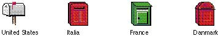

|
|
Think About Worldwide CompatibilityYour icon should be localizable for different regions around the world or should be designed with worldwide use in mind. For example, to localize an icon for receiving mail, you would substitute a post box for a mailbox in British system software. A worldwide icon is one that is understood universally. An example of an icon that is understood around the world is the document icon. Even though people in different locations around the world use different sizes of paper and different types of paper stock, they all still recognize the document icon as a representation of a document.Figure 8-10 shows some examples of mailbox icons that have been localized for use in different countries. Figure 8-10 Localized mailbox icons  In general icons shouldn't be gratuitously cute. Humor typically doesn't translate well to other cultures or languages. Also, don't use inside jokes or pictures that represent code names for your icons. Although it might work to use such icons during your development process for product identification, be sure to remove them and replace them with appropriate icons before you ship. Symbols and colloquial language are usually culturally dependent, meaning that what one person relates to may have no meaning or may be an insult in another person's culture. |